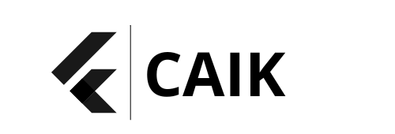

21″ panel + QR
Velký panel s rychlým výběrem receptur, QR pro načtení profilu a přizpůsobení limitů podle zdravotních dat.

CAIK Cloud Systems
Na míru pro každý trénink
Čerstvé koncentráty se dávkují v reálném čase, chlazené na 8–10 °C, automat po každém nápoji provede proplach horkou párou i UV‑C sterilizaci. Vidíte přesné dávky příchutí, jak klesají z karuselu do vašeho kelímku.

Digitální ekosystém a ovládání
SmartMix kombinuje intuici dotykového rozhraní s daty z CAIK Cloud. Každý výdej je spojen s profilem uživatele, NFC platbou a analytikou spotřeby.
Velký panel s rychlým výběrem receptur, QR pro načtení profilu a přizpůsobení limitů podle zdravotních dat.
Vzdálená diagnostika, monitoring trendů, hromadné sběry dat a export pro optimalizaci provozu flotily.
Automatická synchronizace nahrává biometrické limity a doporučí přesné mikro-dávky.
Okamžitá transakce včetně výpočtu příplatků za přidané koncentráty, plně PCI compliant.
Pokročilá mechanika a skladování
Osm nezávislých trysek dávkuje koncentráty přímo do poháru, takže nedochází k promíchání v potrubí. Každá příchuť i doplněk má vlastní slot v chlazené komoře – od minerálů přes bylinné tinktury až po kvalitní sirupy.
Senzory, hygiena a bezpečnost
Soustava ToF senzorů zabraňuje rozlití, automatický proplach a UV‑C sterilizace pracují po každém výdeji. Konstrukce kombinuje kalené sklo a matný černý kov.
Laserově detekují přítomnost šálku a zastaví dávkování, pokud není nádoba správně umístěna.
Čisticí cyklus s horkou vodou po každém podání, aby v tryskách nezůstaly zbytky.
99,9 % mikrobiální redukce mezi servírováním – splňuje hygienické normy i pro náročný provoz.
Kombinace kaleného skla a matného černého kovu odolává náročnému prostředí fitness i office.
SmartMix v terénu
Zákazník si navolí příchuť, sleduje míchání za sklem a zaplatí bezkontaktně během pár vteřin. Čerstvě chlazené ingredience a pravidelné proplachy zaručují vždy čistý kelímek.
Kontakt
Máte tip na nové místo nebo se chcete na SmartMix podívat osobně? Ozvěte se přímo týmu CAIK.
darthondra@gmail.com · +420 734 309 932 · CAIK Studio, Plzeň